On my not-too-shabby laptop CPU, I can run most common CNN models in (at most) 10-100 milliseconds, with libraries like TensorFlow. In 2019, even a smartphone can run "heavy" CNN models (like ResNet) in less than half a second. So imagine my surprise when I timed my own simple implementation of a convolution layer and found that it took over 2 seconds for a single layer!
It's no surprise that modern deep-learning libraries have production-level, highly-optimized implementations of most operations. But what exactly is the black magic that these libraries use that we mere mortals don't? How are they able to improve performance by 100x? What exactly does one do to "optimize" or accelerate neural networks operations? These are questions I often asked (and get asked) when talking about high-performance/efficient DNNs.
In this post, I'll attempt to walk you through how a convolution layer is implemented in DNN libraries. Not only is it one of the most common and heaviest operations in many DNN models, I also find convolution to be particularly representative of the kind of tricks that go into these high-performance implementations -- a little of bit of algorithmic cleverness and a lot of careful tuning and exploitation of low-level architecture.
A lot of what I cover here is from the seminal paper "Anatomy of a high-performance matrix multiplication" by Goto et al. which formed the basis for the algorithms used in linear algebra libraries like OpenBLAS; and these helpful tutorial from Dr. Stefan Hadjis and Chris Rose.
Naive Convolutions
"Premature optimization is the root of all evil" -- Donald Knuth
Before we go around optimizing things, let's first get a handle on our baseline and bottlenecks. Here's a naive numpy/for-loop convolution that you'd write in Deep Learning 101:
'''
Convolve `input` with `kernel` to generate `output`
input.shape = [input_channels, input_height, input_width]
kernel.shape = [num_filters, input_channels, kernel_height, kernel_width]
output.shape = [num_filters, output_height, output_width]
'''
for filter in 0..num_filters
for channel in 0..input_channels
for out_h in 0..output_height
for out_w in 0..output_width
for k_h in 0..kernel_height
for k_w in 0..kernel_width
output[filter, out_h, out_w] +=
kernel[filter, channel, k_h, k_w] *
input[channel, out_h + k_h, out_w + k_w]Yikes. That's 6 nested for loops for one conv (7 if you iterate over batches of multiple inputs). And we're not yet looking at stride, dilation, or any other parameters. If I plug in here the sizes for, say the first layer of MobileNet, and run this in plain C, it takes a whopping 22 seconds! With the most aggressive compiler optimizations like -O3 or -Ofast, it reduces to 2.2 seconds. But that's still terribly slow for just the first layer.
What if I run the same layer using, say, Caffe? It took just 18ms on the same PC. That's more than a 100x speedup! The entire network itself runs in ~100ms on my CPU.
What is the bottleneck and where should we begin to optimize?
The inner-most loop does 2 floating point operations (multiply & add), and for the sizes I used, it's executed about 85.16 million times, i.e. this convolution requires 170 million floating point operations (MFLOPs). The peak performance of my CPU, according to Intel, is 80 billion FLOPs per second, i.e. it could theoretically finish the job in 0.002 seconds. Clearly, we're nowhere near that and clearly, the raw processing capability is more than sufficient here.
The reason that the theoretical peak isn't achieved (ever) is that memory accesses also take time -- it's not enough to process data quickly, if you can't get the data quickly. It turns out that the heavily-nested for-loops above make for very difficult data access patterns, which poorly utilize the cache.
As you'll see, a recurring concern throughout the discussion will be how we're accessing the data we're operating on, and how that relates to the way it's stored.
Some Prerequisites
FLOP/s
Our metric for "performance" or speed will be the throughput, measured in the number of FLoating Point Operations per Second, or FLOP/s. A bigger operation with more floating-point operations will naturally run slower, so FLOP/s rate allows a more consistent way to compare performance.
We can also use this to get an idea of how close we are to the peak performance of the CPU. On my laptop CPU:
- there are 2 phsyical cores
- each core has a frequency of 2.5 GHz, or CPU cycles per second
- in each cycle, it can process 32 FLOPs (using AVX & FMA, more on this in a bit)
This gives a peak performance of GFLOP/s. This is the theoretical peak of my CPU. Similarly, for a single core, this number is 80 GFLOP/s.
Storage orders and Row Major
While we logically view matrices/images/tensors as multi-dimensional, they're physically stored in a linear, one-dimensional computer memory. We have to define a convention which dictates how to unwrap these multiple dimensions to a linear storage, and vice versa.
Most modern DL libraries use a row-major storage order. This means that consecutive elements of the same row are stored next to each other. More generally with multiple dimensions, row-major means the first dimension changes the slowest as you scan the memory linearly.
What about the ordering of the dimensions themselves? Usually for 4-dimensional tensors like in CNNs, you'll hear of storage orders like NCHW, NHWC, etc. I'll assume NCHW throughout this post -- if I have N blocks of C channels of HxW images, then all images with the same N are contigous; within that block all pixels of the same channel C are contigous, and so on.
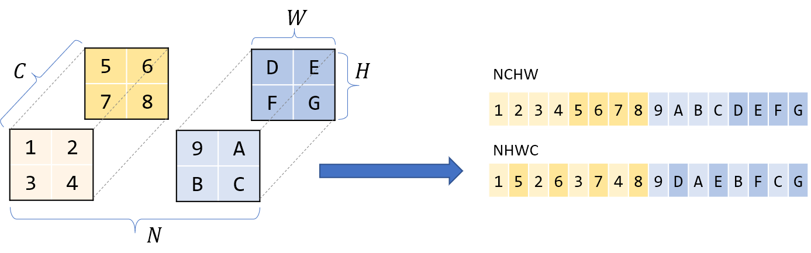
Halide
Many of the optimizations discussed here require meddling at the lower-level with cryptic C syntax or even assembly. Not only does this make code difficult to read, it also makes trying out different optimizations difficult as we have to re-write our entire code. Halide is an embedded language in C++ that helps abstract these concepts and is designed to help write fast image-processing code. It makes it easier to experiment with different optimizations by disentangling the algorithm (what to compute) and the schedule (how/when to compute it). We can keep the algorithm fixed, and play around with different schedules.
I'll use Halide to represent these lower-level concepts, but you should be able to understand the intuitive function names enough to follow along.
From Convolution to GEMM
The naive convolution that we discussed above is slow already, and a more realistic implementation will only be further complicated by parameters like stride, dilation, padding, etc. We could continue using the basic conv as a working example but, as you'll see, extracting maximum performance out of the computer requires many tricks -- carefully fine-tuning at multiple levels & exploting very specific knowledge of the computer architecture at hand. In other words, this is going to be a formidable task if we're hoping to address all of the complexities.
Can we instead transform this into a problem that's easier to solve? Perhaps matrix multiplication?
Matrix multiplication, or matmul, or Generalized Matrix Multiplication (GEMM), is at the heart of deep learning. It's used in fully-connected layers, RNNs, etc., and can be used to implement convolutions too.
Conv is, after all, a dot-product of the filter with input patches. If we lay out the filter into a 2-D matrix and the input patches in another, then the multiplying these 2 matrices would compute the same dot product. And matrix multiplication -- unlike CNNs -- has been heavily studied and optimized over several decades, being a critical problem in many scientific domains.
The above laying out of the image patches into a matrix is called im2col, for image to column. We rearrange the image into columns of a matrix, so that each column corresponds to one patch where the conv filter is applied.
Consider this normal, direct 3x3 convolution:
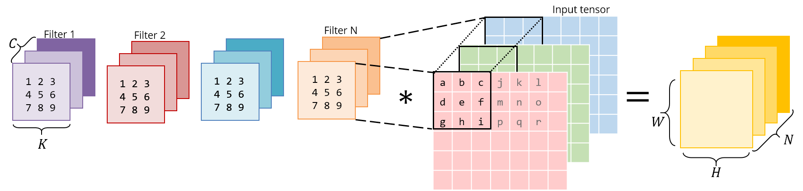
Below is the same operation implemented as a matrix multiplication. The right matrix is the result of im2col -- it has to be constructed by copying pixels from the original image. The left matrix has the conv weights, which are already stored this way in memory.
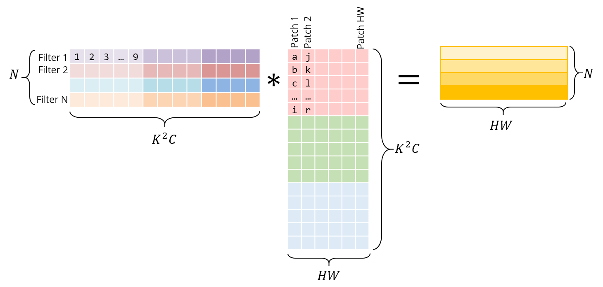
Note that the matrix product gives us the conv output directly -- there is no need for an extra "conversion" to the original form.
I've shown each patch as independent here for visual clarity. However, in reality, there usually is some overlap between different image patches, and hence im2col incurs some memory duplication. The time taken to generate this im2col buffer and the inflated memory, will have to be offset by the speedup we achieve via GEMM.
With im2col, we have now transformed the convolution operation into a matrix multiplication. We can now plug in more general-purpose & popular linear algebra libraries like OpenBLAS, Eigen, etc. to take care of efficiently computing this matmul, riding on the back of decades of optimizations & careful fine-tuning.
We'll need some pretty serious speedups if we're going to justify the extra work and memory resulting from the im2col transform, so let's see how these libraries might be achieving that. This also gives a good intro to some general approaches when optimizing at the system level.
While this idea of convolution-as-GEMM existed in different forms before, Caffe was one of the first deep-learning libraries to use this method for general convs on CPU & GPU and show a major speedup. Here's a very interesting read from Yanqing Jia himself (creator of Caffe) on the origins of this decision from a thesis deadline, and thoughts on "temporary" solutions.
Speeding up the GEMM
Naive
Through the rest of this post, I'll assume the GEMM is performed as
As before, first let's time the basic, textbook matrix multiplication:
for i in 0..M:
for j in 0..N:
for k in 0..K:
C[i, j] += A[i, k] * B[k, j]Or in Halide:
Halide::Buffer C, A, B;
Halide::Var x, y;
C(x,y) += A(k, x) *= B(y, k); // loop bounds, dims, etc. are taken care of automaticallyThe inner most line does 2 floating point ops (multiply & add) and is performed times, so the number of FLOPs for this GEMM is .
Let's measure its performance for various matrix sizes:
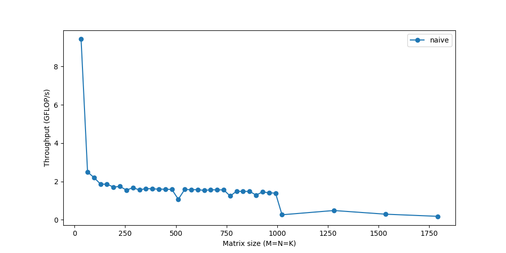
We barely reach 10% of peak performance! While we'll look into ways to make the computation faster, a recurring theme will be that it's not enough to just compute the data fast if we can't get the data fast. As memory becomes a bigger and bigger issue for larger matrices, the performance continues to gradually dip. The sharp drop you see towards the end? That represents the point when the matrices become too big to fit in the cache and the throughput suddenly drops -- you can see the system choking.
Caching
The RAM is a large but slow storage. CPU caches are orders of magnitude faster, but much smaller, so using them correctly is critical. But there is no explicit instruction that says "load this data to cache". It's a process automatically managed by the CPU.
Every time we fetch data from the main memory, the CPU automatically loads it and its neighboring memory into the cache, hoping to utilize locality of reference.
The first thing that you should then notice is the pattern in which we're accessing our data. We're traversing row-wise on and column-wise on .
Their storage is also row-major, so once we find A[i, k], the next element in the row, A[i, k+1] is already cached. Cool. But see what happens for :
- the next element of the column isn't present in the cache -- we get a cache miss and the CPU stalls while the data is fetched
- once fetched, the cache also gets filled with other elements in the same row of . We won't actually use them, so they'll be evicted soon. A few iterations later when they're actually needed, we'll be working to fetch them again. We're polluting the cache with values we don't need.
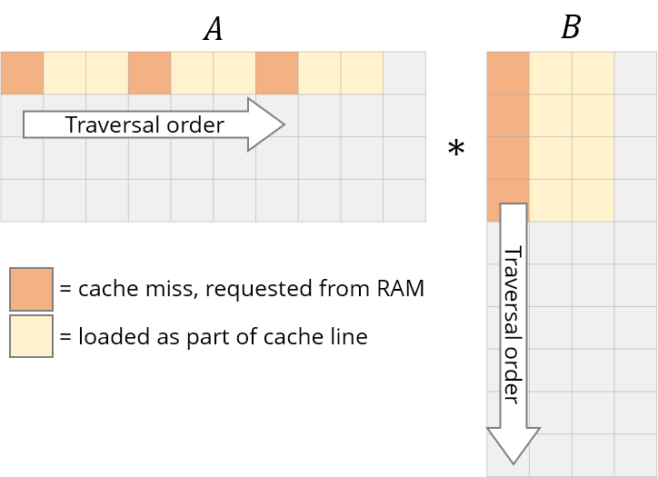
We need to rework our loops to exploit this caching ability instead. If data is being read, we might as well make use of it. This brings us to the first change we'll make: loop reordering.
Let's reorder the loops from i,j,k to i,k,j:
for i in 0..M:
for k in 0..K:
for j in 0..N:Our answer is still correct because the order of multiplications/additions doesn't matter. The traversal order will now look like this
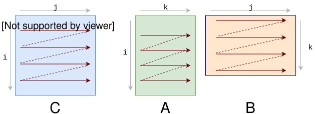
This simple change of just reordering the loops gives a considerable speedup:
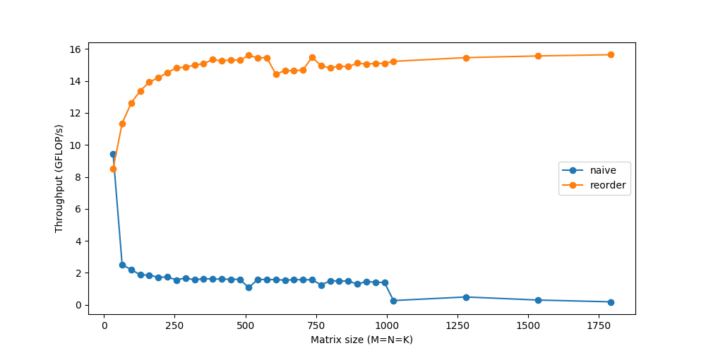
Tiling
To further improve upon reordering, there's one more caching issue we need to consider.
For each row of , we were looping over the entirety of . With each step over B, we'll load some of its new columns and evict some older ones from the cache. When we get to the next row of A, we start all over again from the first columns. We're repeatedly adding and removing the same data from the cache, or thrashing it.
The thrashing wouldn't occur if all our data could fit in the cache. If only we were working with smaller matrices, they could happily live together without getting evicted repeatedly. Thankfully for us, we can break down matrix multiplication over submatrices. To compute a small tile of , we only need rows of and columns of . Let's break into tiles of 6x16.
C(x, y) += A(k, y) * B(x, k);
C.update()
.tile(x, y, xo, yo, xi, yi, 6, 16)
/*
in pseudocode:
for xo in 0..N/16:
for yo in 0..M/6:
for yi in 6:
for xi in 0..16:
for k in 0..K:
C(...) = ...
*/We've broken the x,y dimensions into an outer xo,yo and inner xi,yi. We'll spend our efforts optimizing a micro-kernel for the smaller 6x16 block (marked by xi,yi), and run that micro-kernel over all the blocks (iterated by xo,yo).
Vectorization & FMA
Most modern CPUs support SIMD, or Single Instruction Multiple Data. As the name suggests, SIMD can be used to do the same operation/instruction (like add, multiply, etc.) on multiple values simultaneously, in the same CPU cycle. If we can run SIMD instructions on say 4 data points at a time, that's a 4x speedup straightaway.
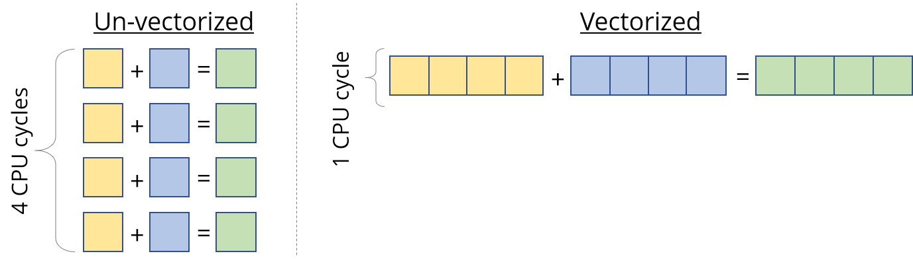
So when we calculated the peak speed of the processor, we sort of cheated and were instead referring to this vectorized performance. This is of great use for data like vectors, where we have to apply the same instruction to every vector element. But we still have to design our kernel to exploit this properly.
The second "hack" we used while calculating the peak FLOPs was FMA -- Fused Multiply-Add. While multiplying and adding are counted as 2 separate floating-point operations, they're so common that dedicated hardware units are available that fuse the 2 and perform them as a single instruction. Using this is usually handled by the compiler.
On Intel CPUs, we can use SIMD (called AVX & SSE) for processing up to 8 floating-point numbers in a single instruction. Compiler optimizations will often be able to identify vectorization opportunities on their own, but we'll take things in our own hands just to be sure.
C.update()
.tile(x, y, xo, yo, xi, yi, 6, 16)
.reorder(xi, yi, k, xo, yo)
.vectorize(xi, 8)
/*
in pseudocode:
for xo in 0..N/16:
for yo in 0..M/6:
for k in 0..K:
for yi in 6:
for vectorized xi in 0..16:
C(...) = ...
*/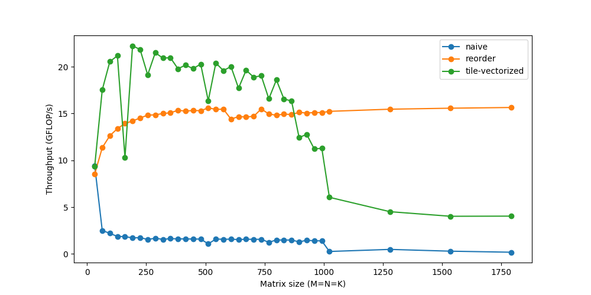
Threading
Up until now we've only been using one CPU core. We have multiple cores available, and each core can physically execute multiple instructions at the same time. A program can divide itself into multiple threads, and each thread can run on a separate core.
C.update()
.tile(x, y, xo, yo, xi, yi, 6, 16)
.reorder(xi, yi, k, xo, yo)
.vectorize(xi, 8)
.parallel(yo)
/*
in pseudocode:
for xo in 0..N/16 in steps of 16:
for parallel yo in steps of 6:
for k in 0..K:
for yi in 6:
for vectorized xi in 0..16 in steps of 8:
C(...) = ...
*/You might notice that the performance actually drops for very small sizes, because with small workloads, the threads spend less time working and more time synchronizing with each other. There are a lot of other such issues with respect to threading that could warrant another deep dive on its own.
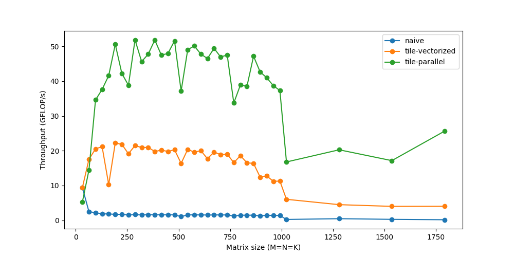
Unrolling
Loops let us avoid the pain of writing the same line over and over again, while introducing a little extra work like checking for loop termination, updating the loop counters, pointer arithmetic, etc. If instead we manually write out the repeated loop statements and unroll the loop, we can reduce this overhead. For instance, instead of 8 iterations of 1 statement, we could run 2 iterations of 4 statements.
I initially found it surprising that such fickle and seemingly insignificant overheads can actually matter. However, while these loop operations may be "inexpensive", they're certainly not free. The cost of 2-3 extra instructions for each iteration will add up quickly if you remember that the number of iterations here is in millions. The benefits do diminish progressively as the loop overhead becomes relatively smaller.
Unrolling is another optimization that is almost entirely taken care of by compilers now, except in micro-kernels like ours where we prefer more control.
C.update()
.tile(x, y, xo, yo, xi, yi, 6, 16)
.reorder(xi, yi, k, xo, yo)
.vectorize(xi, 8)
.unroll(xi)
.unroll(yi)
/*
in pseudocode:
for xo in 0..N/16:
for parallel yo:
for k in 0..K:
C(xi:xi+8, yi+0)
C(xi:xi+8, yi+1)
...
C(xi:xi+8, yi+5)
C(xi+8:xi+16, yi+0)
C(xi+8:xi+16, yi+1)
...
C(xi+8:xi+16, yi+5)
*/We're now able to touch speeds up to 60 GFLOP/s.
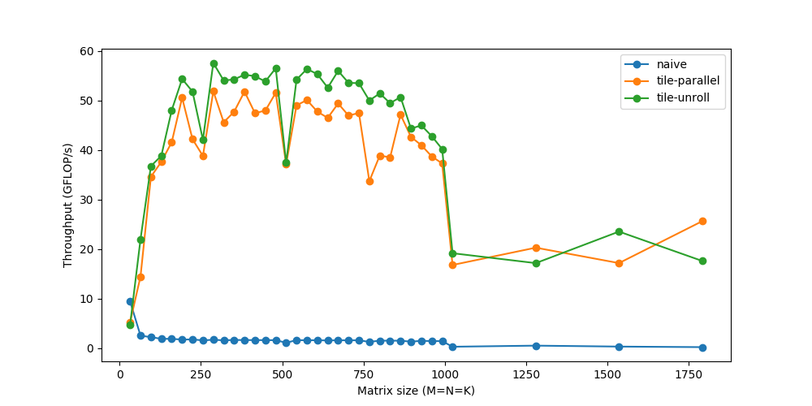
Putting It together
The above steps cover some of the most commonly-used transformations to speed up performance. They're usually combined in different ways to come up with more and more complex schedules to compute the same task.
Here's a schedule from Halide that's more carefully optimized.
matrix_mul(x, y) += A(k, y) * B(x, k);
out(x, y) = matrix_mul(x, y);
out.tile(x, y, xi, yi, 24, 32)
.fuse(x, y, xy).parallel(xy)
.split(yi, yi, yii, 4)
.vectorize(xi, 8)
.unroll(xi)
.unroll(yii);
matrix_mul.compute_at(out, yi)
.vectorize(x, 8).unroll(y);
matrix_mul.update(0)
.reorder(x, y, k)
.vectorize(x, 8)
.unroll(x)
.unroll(y)
.unroll(k, 2);In summary, it does this:
- Split
outinto tiles of 32x24. Further split each tile into 8x24 sub-tiles - Compute the 8x24 matmul in a temporary buffer (
matrix_mul), with the similar reordering, vectorization, and unrolling - Copy the temporary
matrix_mulback tooutwith vectorization, unrolling, etc. - Parallelize this process over all 32x24 tiles
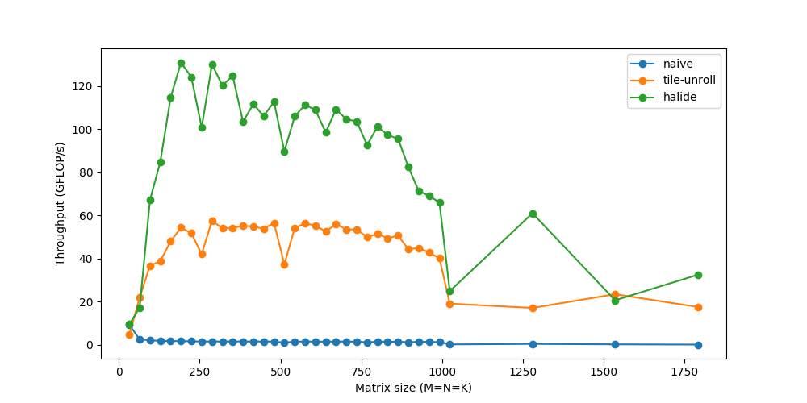
Finally, we're able to touch speeds of over 120 GFLOPs -- respectably close to the peak performance of 160 GFLOPs, and matching production-level libraries like OpenBLAS. With similar fine-tuned code for im2col, followed by gemm, the same convolution now runs in ~20ms. If you're interested in going deeper into this, try experimenting with different schedules of your own -- while as an engineer I had always heard statements about caching, performance, etc., seeing their true effect can be rewarding and fun.
Note that this im2col+gemm method is a popular general-purpose methods in most deep learning libraries. However, specialization is key -- for specific commonly-used sizes, different architectures (GPU), and different operation parameters (like dilation, grouping, etc.), these libraries might again have more specialized implementations utilizing similar tricks or assumptions specific to those cases. These micro-kernels are built after a highly iterative process with trial and error. Programmers often have only an intuition of what should/shouldn't work well and/or must think of explanations based on the results. Sounds like a perfect match for deep learning research, right?